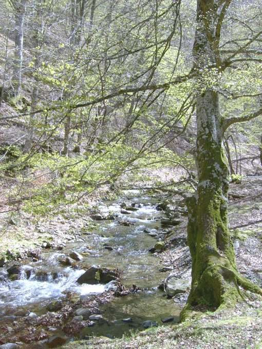
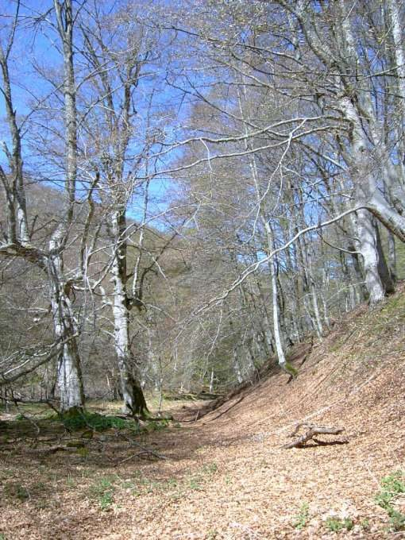

El Rajao
Tobía · comarca del Najerilla
- Distancia9,4 km
- Desnivel380 m
- Tiempo orientativo3 h
- Dificultadmedia
- Época recomendadaprimavera y otoño
- Terrenocamino
Cuando se trata de dar un tranquilo paseo por un hayedo este “Lugar con encanto” es un candidato perfecto. Un ancho camino nos guiará a lo largo de todo el recorrido, y si queremos “perdernos” y explorar un poco a nuestro aire el inmenso bosque, también tendremos esa opción. Para los más aventureros, un austero refugio nos da la posibilidad de pernoctar en la zona.
Ya sabéis; cenar a la luz de los frontales o las velas, charlar junto a la chimenea, levantarnos del saco por la mañana y lavarnos la cara con agua del arroyo, peinarse sin espejo…


Recorrido
El área de esparcimiento de El Rajao se encuentra a unos 8 kilómetros de Tobía, siguiendo por la estrecha carretera que remonta el arroyo del mismo nombre. Allí se combinan: una una zona de acampada controlada, un refugio y unos merenderos. Comenzamos a andar por el camino que asciende hacia el refugio, situado a unos 100 metros de la carretera.
El desnivel más fuerte del recorrido lo abordaremos durante el primer kilómetro, y eso se hace notar. El camino principal, por el cual circularemos durante todo el recorrido, es bastante evidente. En cualquier caso, de vez en cuando nos encontramos con algunos desvíos y pequeñas trochas. Una vez ganada bastante altura el camino se limita a adaptarse a la sinuosidad de la ladera, sin demasiados desniveles.
Más tarde, un suave descenso nos lleva hasta la zona de Tres Aguas, donde volvemos a encontrarnos con el cauce del Arroyo Tobía. Por así decirlo, aquí comienza el regreso del recorrido. Sin más, tomamos un camino que nos llevará, pegados siempre a la margen izquierda del arroyo, hasta el mismo punto del que habíamos partido.


{kind=link}
{kind=link}